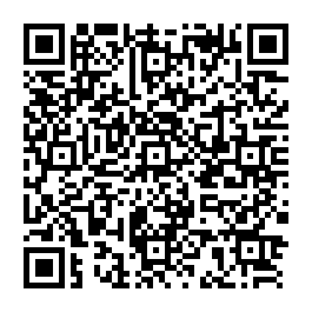
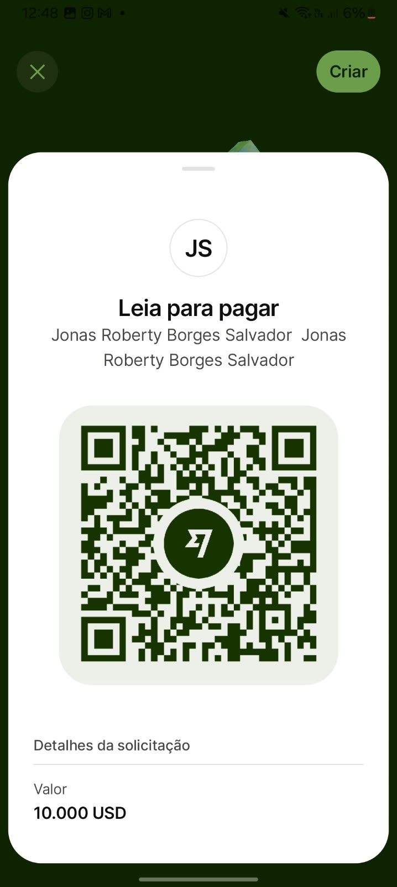
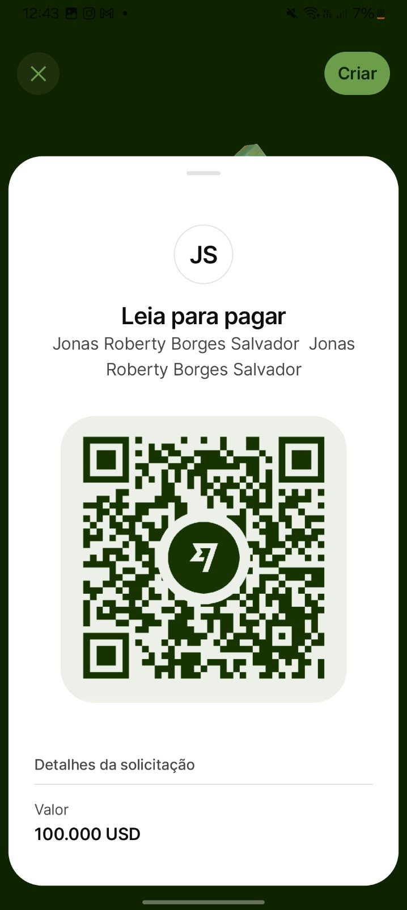
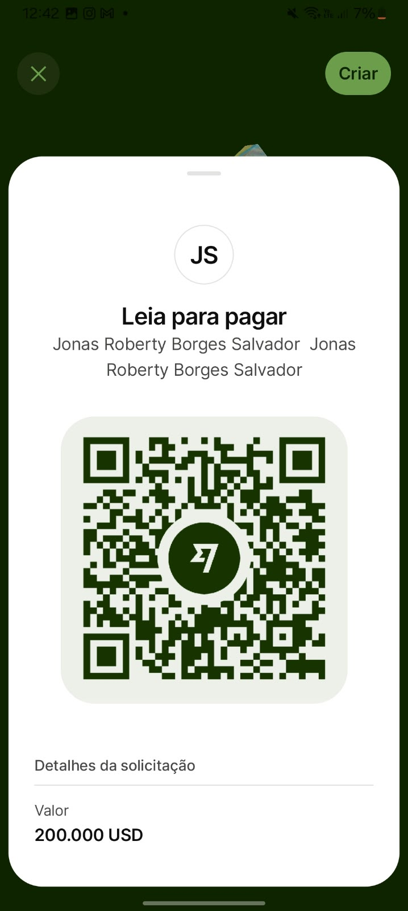
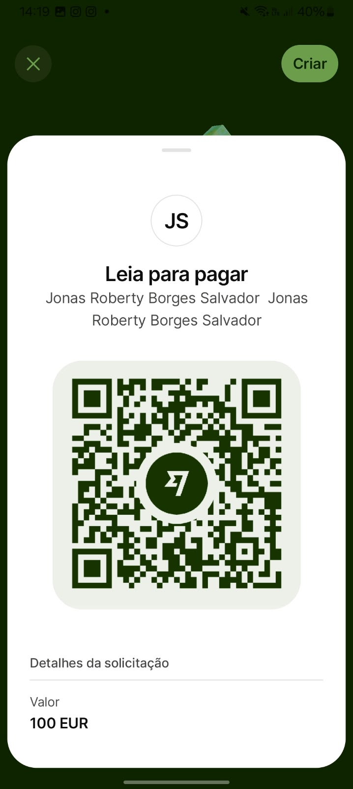
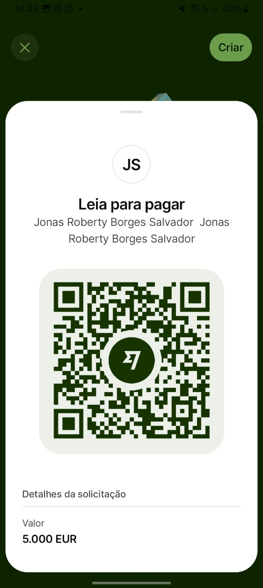

Johns Hopkins Vasculitis Center
Centro dedicado a vasculites, com informações específicas sobre poliarterite nodosa.
Conhecer o centro e a PAN ↗Meu nome é Jonas Roberty Borges Salvador. Desde 2007, enfrento a poliarterite nodosa (PAN), uma doença rara que mudou meu corpo, meus planos e minha vida. Agora, busco uma oportunidade de avaliação especializada nos Estados Unidos.
Meu maior sonho hoje é ter saúde para criar meus filhos e estar presente na vida deles.
Conheça minha históriaComo ajudarSou brasileiro, pai de duas crianças e alguém que sempre quis construir uma vida com trabalho, dignidade, saúde e liberdade. Minha história com a PAN começou em 2007, quando surgiram inchaços, dores, vômitos e outros sintomas que transformaram minha rotina. Foram meses de investigação até chegar ao diagnóstico.
Perdi peso, enfrentei problemas renais, pressão alta e o impacto emocional da doença. Durante muitos anos continuei trabalhando, mesmo convivendo com dores, medicamentos, inflamações e limitações. As feridas na pele e as infecções trouxeram ainda mais sofrimento.
Não conto isso para despertar pena. Conto porque quero ser honesto e transparente sobre o que vivi, o que enfrento e por que estou pedindo ajuda. Não posso prometer um resultado médico, mas posso continuar procurando caminhos responsáveis.
“Sonho com um dia sem dor. E, mais do que isso, sonho com muitos anos ao lado dos meus filhos.”
Deus me deu dois filhos lindos, sem sinais da doença. Eles são uma das maiores alegrias da minha vida. Quero vê-los crescer, educá-los, abraçá-los, brincar com eles e ajudá-los a encontrar seu próprio caminho. Minha esposa e minha família fazem parte dessa caminhada.
Meu objetivo é entrar em contato com centros reconhecidos, apresentar meu histórico e meus exames e verificar possibilidades reais de segunda opinião, investigação e acompanhamento. A escolha de um serviço dependerá de aceitação do caso, avaliação médica, custos, documentação e condições de viagem.
Centro dedicado a vasculites, com informações específicas sobre poliarterite nodosa.
Conhecer o centro e a PAN ↗Instituição com atendimento especializado em reumatologia e doenças complexas.
Site oficial ↗Centro multidisciplinar onde pretendo consultar possibilidades de avaliação de vasculite sistêmica.
Site oficial ↗Estudo observacional NCT02257866 sobre vasculites sistêmicas, incluindo PAN. A participação exige verificação de elegibilidade.
Consultar estudo e contatos ↗Transparência: os centros são possibilidades de contato, não consultas confirmadas. Não há promessa de cura, aceitação, financiamento ou transplante de células-tronco para PAN. O NIH realiza pesquisa; um estudo não equivale a tratamento garantido.
A PAN é uma vasculite rara que provoca inflamação em artérias, podendo afetar pele, nervos, rins e outros órgãos. O tratamento depende da gravidade e da avaliação especializada. Esta explicação é informativa e não substitui orientação médica.
Referência: Johns Hopkins Vasculitis Center.
Registros reais de diferentes períodos da minha história. As imagens podem ser fortes e não indicam necessariamente minha condição atual.
Documentos históricos com identificações ocultadas por tarjas brancas, apresentados para contextualizar minha trajetória. Os arquivos devem ser revisados antes da publicação para verificar se não restam dados pessoais.
Busco arrecadar recursos para avaliações médicas especializadas, exames, deslocamentos, estadia e eventuais cuidados necessários nos Estados Unidos. O orçamento final dependerá de respostas dos centros, avaliações e custos reais.
Meta de campanha, não valor já arrecadado nem orçamento médico confirmado. Não há promessa de cura ou tratamento aprovado.
Você escolhe o valor da contribuição no seu aplicativo bancário. Confira o nome do destinatário antes de confirmar.

Imagem Pix indisponível. Utilize a chave abaixo.
Chave Pix aleatória
56b8e8a5-bc85-4738-b07b-643042672f28
Destinatário esperado: JONAS ROBERTY BORGES SALV
Se o banco mostrar outro destinatário, não conclua o pagamento.
Os QR Codes abaixo já estão no repositório. Selecione um valor e confira os dados do pagamento antes de autorizar.




QR Codes disponíveis para contribuições em euros. Verifique moeda, valor e destinatário no aplicativo antes de confirmar.




Compromisso com a transparência: os centros nos EUA são possibilidades de avaliação, sem consultas confirmadas. Nenhuma doação garante tratamento ou resultado. Os QR Codes devem ser conferidos pelo doador no aplicativo financeiro.